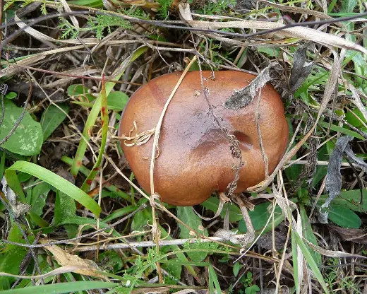

Slippery jack
Slippery jack is a wild mushroom you can forage from April to June in Temperate south-east, Subtropical east coast, South-west and Tasmania. Brown, slimy-capped bolete under pine plantations, with yellow pores (no gills) and a ring on the stem.

When is slippery jack in season in Australia?
Slippery jack is usually in season April to June. Timing shifts with weather, latitude and altitude.
Where does slippery jack grow in Australia?
Slippery jack grows across Australia. Regions: Temperate south-east, Subtropical east coast, South-west, Tasmania.
How do you recognise slippery jack?
Brown, slimy-capped bolete under pine plantations, with yellow pores (no gills) and a ring on the stem.
How do you harvest slippery jack?
Twist or cut mushrooms at the base, brush off soil in the woods and carry them in a basket, never a plastic bag. Only take ones you're 100% sure of, leave old and very young ones, and follow local limits.
How do you eat slippery jack?
Peel the slimy skin, then fry, or dry for soups.
How do you store slippery jack?
Dry.
What can be confused with slippery jack?
Death cap (Amanita phalloides), rated deadly. Death caps grow under oaks in Canberra, Melbourne and Adelaide. They have white gills that never turn pink or brown, a ring, and a bag-like cup at the base. Field mushrooms grow in open pasture and have pink to brown gills.
What is slippery jack good for?
Protein.
What can you cook with slippery jack?
- Slippery jack ragù: Peeled slippery jacks cooked into a pasta sauce.